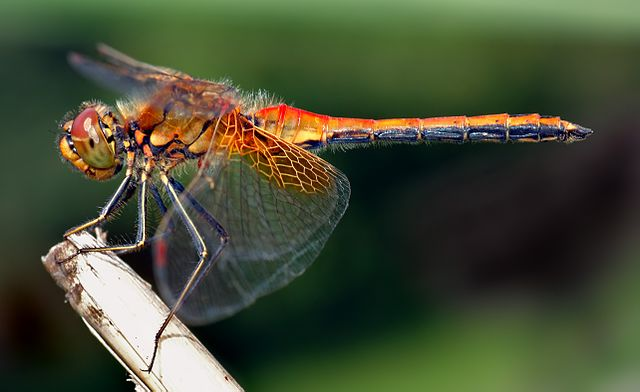

A dragonfly is a flying insect belonging to the order Odonata, infraorder Anisoptera (from Greek ἄνισος anisos, "unequal" and πτερόν pteron, "wing", because the hindwing is broader than the forewing). About 3,000 extant species of true dragonfly are known. Most are tropical, with fewer species in temperate regions. Loss of wetland habitat threatens dragonfly populations around the world. Adult dragonflies are characterized by a pair of large, multifaceted compound eyes, two pairs of strong, transparent wings, sometimes with coloured patches, and an elongated body. Many dragonflies have brilliant iridescent or metallic colours produced by structural colouration, making them conspicuous in flight. An adult dragonfly's compound eyes have nearly 24,000 ommatidia each.
Dragonflies and damselflies are predatory both in the aquatic nymphal and adult stages. Nymphs feed on a range of freshwater invertebrates and larger ones can prey on tadpoles and small fish.[34] Adults capture insect prey in the air, making use of their acute vision and highly controlled flight. The mating system of dragonflies is complex, and they are among the few insect groups that have a system of indirect sperm transfer along with sperm storage, delayed fertilization, and sperm competition.[34] Adult males vigorously defend territories near water; these areas provide suitable habitat for the nymphs to develop, and for females to lay their eggs. Swarms of feeding adults aggregate to prey on swarming prey such as emerging flying ants or termites.[34 Habitat preference: A four-spotted chaser, Libellula quadrimaculata on an emergent plant, the water violet Hottonia palustris, with submerged vegetation in the background Dragonflies as a group occupy a considerable variety of habitats, but many species, and some families, have their own specific environmental requirements.[35] Some species prefer flowing waters, while others prefer standing water. For example, the Gomphidae (clubtails) live in running water, and the Libellulidae (skimmers) live in still water.[35] Some species live in temporary water pools and are capable of tolerating changes in water level, desiccation, and the resulting variations in temperature, but some genera such as Sympetrum (darters) have eggs and nymphs that can resist drought and are stimulated to grow rapidly in warm, shallow pools, also often benefiting from the absence of predators there.[35] Vegetation and its characteristics including submerged, floating, emergent, or waterside are also important. Adults may require emergent or waterside plants to use as perches; others may need specific submerged or floating plants on which to lay eggs. Requirements may be highly specific, as in Aeshna viridis (green hawker), which lives in swamps with the water-soldier, Stratiotes aloides.[35] The chemistry of the water, including its trophic status (degree of enrichment with nutrients) and pH can also affect its use by dragonflies. Most species need moderate conditions, not too eutrophic, not too acidic;[35] a few species such as Sympetrum danae (black darter) and Libellula quadrimaculata (four-spotted chaser) prefer acidic waters such as peat bogs,[36] while others such as Libellula fulva (scarce chaser) need slow-moving, eutrophic waters with reeds or similar waterside plants.[37][38]
Many dragonflies, particularly males, are territorial. Some defend a territory against others of their own species, some against other species of dragonfly and a few against insects in unrelated groups. A particular perch may give a dragonfly a good view over an insect-rich feeding ground; males of many species such as the Pachydiplax longipennis (blue dasher) jostle other dragonflies to maintain the right to alight there.[39] Defending a breeding territory is common among male dragonflies, especially in species that congregate around ponds. The territory contains desirable features such as a sunlit stretch of shallow water, a special plant species, or the preferred substrate for egg-laying. The territory may be small or large, depending on its quality, the time of day, and the number of competitors, and may be held for a few minutes or several hours. Dragonflies including Tramea lacerata (black saddlebags) may notice landmarks that assist in defining the boundaries of the territory. Landmarks may reduce the costs of territory establishment, or might serve as a spatial reference.[40] Some dragonflies signal ownership with striking colours on the face, abdomen, legs, or wings. The Plathemis lydia (common whitetail) dashes towards an intruder holding its white abdomen aloft like a flag. Other dragonflies engage in aerial dogfights or high-speed chases. A female must mate with the territory holder before laying her eggs.[39] There is also conflict between the males and females. Females may sometimes be harassed by males to the extent that it affects their normal activities including foraging and in some dimorphic species females have evolved multiple forms with some forms appearing deceptively like males.[41] In some species females have evolved behavioural responses such as feigning death to escape the attention of males.[42] Similarly, selection of habitat by adult dragonflies is not random, and terrestrial habitat patches may be held for up to 3 months. A species tightly linked to its birth site utilises a foraging area that is several orders of magnitude larger than the birth site.[43]
Mating in dragonflies is a complex, precisely choreographed process. First, the male has to attract a female to his territory, continually driving off rival males. When he is ready to mate, he transfers a packet of sperm from his primary genital opening on segment 9, near the end of his abdomen, to his secondary genitalia on segments 2–3, near the base of his abdomen. The male then grasps the female by the head with the claspers at the end of his abdomen; the structure of the claspers varies between species, and may help to prevent interspecific mating.[44] The pair flies in tandem with the male in front, typically perching on a twig or plant stem. The female then curls her abdomen downwards and forwards under her body to pick up the sperm from the male's secondary genitalia, while the male uses his "tail" claspers to grip the female behind the head: this distinctive posture is called the "heart" or "wheel";[34][45] the pair may also be described as being "in cop".[46] Egg-laying (ovipositing) involves not only the female darting over floating or waterside vegetation to deposit eggs on a suitable substrate, but also the male hovering above her or continuing to clasp her and flying in tandem. The male attempts to prevent rivals from removing his sperm and inserting their own,[47] something made possible by delayed fertilisation[34][45] and driven by sexual selection.[44] If successful, a rival male uses his penis to compress or scrape out the sperm inserted previously; this activity takes up much of the time that a copulating pair remains in the heart posture.[48] Flying in tandem has the advantage that less effort is needed by the female for flight and more can be expended on egg-laying, and when the female submerges to deposit eggs, the male may help to pull her out of the water.[47] Egg-laying takes two different forms depending on the species. The female in some families (Aeshnidae, Petaluridae) has a sharp-edged ovipositor with which she slits open a stem or leaf of a plant on or near the water, so she can push her eggs inside. In other families such as clubtails (Gomphidae), cruisers (Macromiidae), emeralds (Corduliidae), and skimmers (Libellulidae), the female lays eggs by tapping the surface of the water repeatedly with her abdomen, by shaking the eggs out of her abdomen as she flies along, or by placing the eggs on vegetation.[48] In a few species, the eggs are laid on emergent plants above the water, and development is delayed until these have withered and become immersed
Although dragonflies are swift and agile fliers, some predators are fast enough to catch them. These include falcons such as the American kestrel, the merlin,[70] and the hobby;[71] nighthawks, swifts, flycatchers and swallows also take some adults; some species of wasps, too, prey on dragonflies, using them to provision their nests, laying an egg on each captured insect. In the water, various species of ducks and herons eat dragonfly nymphs[70] and they are also preyed on by newts, frogs, fish, and water spiders.[72] Amur falcons, which migrate over the Indian Ocean at a period that coincides with the migration of the globe skimmer dragonfly, Pantala flavescens, may actually be feeding on them while on the wing.[73]
Dragonflies are affected by three major groups of parasites: water mites, gregarine protozoa, and trematode flatworms (flukes). Water mites, Hydracarina, can kill smaller dragonfly nymphs, and may also be seen on adults.[74] Gregarines infect the gut and may cause blockage and secondary infection.[75] Trematodes are parasites of vertebrates such as frogs, with complex life cycles often involving a period as a stage called a cercaria in a secondary host, a snail. Dragonfly nymphs may swallow cercariae, or these may tunnel through a nymph's body wall; they then enter the gut and form a cyst or metacercaria, which remains in the nymph for the whole of its development. If the nymph is eaten by a frog, the amphibian becomes infected by the adult or fluke stage of the trematode.[76]